StarUML™ supports COM automation and exposes API to outside to access most
programs that is uml meta model, application object and so on.
This chapter discuss that using the external API of StarUML™.
This section describes methods of managing projects, units and model fragments in StarUML™.
In order to manage projects, it is important to understand the concepts related to projects (projects, units, and model fragments).
A project is the most basic unit of management in StarUML™. A project manages one or more software models, and it can be understood as a top-level package that does not change. One project is usually saved as one file. A project contains and manages the following modeling elements.
| Element | Description |
|---|---|
| Model | Element for managing one software model. |
| Subsystem | Element for managing the elements that express one subsystem. |
| Package | Most basic element for managing elements. |
Project files are saved in the XML format, and the extension name is ".UML". While all models, views, and diagrams created in StarUML™ are saved in one project file, a project may be divided and saved in multiple files by using units that are described in the next section. The following information is saved in project files.
While a project is usually saved in one file, there may be cases where a project has to be divided and saved in multiple files because many people have to work on it concurrently and so on. In cases such as this, a project can be managed in multiple units. Units can be organized hierarchically, and one unit can have many sub-units. A unit is saved in a ".UNT" file, and it is referenced by project files (.UML) and other unit files (.UNT).
Only a package, subsystem, or model element can be one unit. Any element belonging to these groups is saved as a respective unit file (.UNT).
Just as a project can manage multiple units under it, a unit can manage many sub-units. Upper units have references to sub-units, and units form a hierarchical structure.
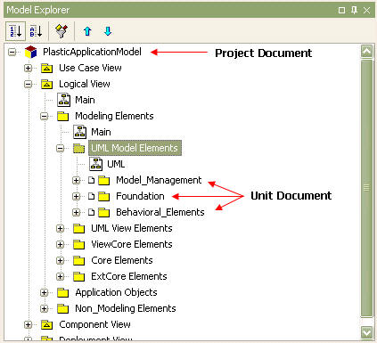
A model fragment is a part of a project saved in a separate file. Only a model, subsystem, or package element can be a model fragment, and it is saved as a ".MFG" file. A model fragment file can easily be added to any project at any time. Model fragments are essentially different from units because they can completely be merged.
A document is an abstracted object of a part saved as a file in StarUML™. In other words, it provides various properties and methods to access a .UML or .UNT part as one object. While a model fragment (.MFG) is also one file, it does not have a document object as it is used for importing/exporting and is not internally managed by the StarUML™ application. The following diagram illustrates hierarchical structure of document interfaces.
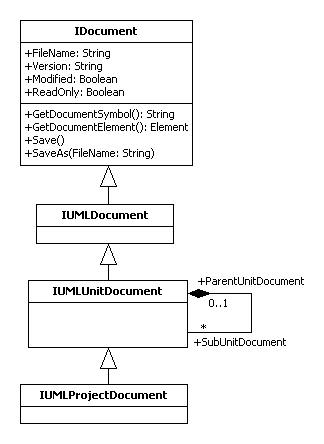
In order to access a project or unit document object, the IProjectManager object reference must be acquired. This allows direct access to the project or unit document object.
var app = new ActiveXObject("StarUML.StarUMLApplication");
var prjmgr = app.ProjectManager;
// Get project document object.
var prj_doc = prjmgr.ProjectDocument;
// Get unit document objects.
for (var i = 0; i < prjmgr.GetUnitDocumentCount(); i++) {
var unit_doc = prjmgr.GetUnitDocumentAt(i);
}
While IProjectManager allows direct access to documents, document objects can also be acquired through the respective modeling elements that contain them. The following example illustrates acquiring reference for a project document object from an element and saving it.
var elem = ... // Assign specific element(i.e. Class, Package, etc)
var elem_doc = elem.GetContainingDocument();
elem_doc.Save();
The IDocument interface provides the following properties and methods.
| Property | Description |
|---|---|
| FileName: String | Acquires file name of the document. File name includes the full path and extension. |
| Version: String | Acquires version of the document. |
| Modified: Boolean | Determines if the document has been modified by the user. |
| ReadOnly: Boolean | Determines if the document file is read-only. |
| Method | Description |
| GetDocumentSymbol(): String | Acquires document symbol. Returns 'PROJECT' string for project documents and 'UNIT' string for unit documents. |
| GetDocumentElement(): IElement | Returns the top element for the document. |
| Save() | Saves the document with the current file name. |
| SaveAs(FileName: String) | Saves the document with a different file name and changes the current file name. |
In order to directly manage a project, reference for the project object must be acquired. The following is the Jscript code for acquiring reference for a project object.
var app = new ActiveXObject("StarUML.StarUMLApplication");
var prj = app.GetProject();
...
While reference for project objects can be acquired directly from the application object (app), project objects can also be accessed using the following method.
var app = new ActiveXObject("StarUML.StarUMLApplication");
var prjmgr = app.ProjectManager;
var prj = prjmgr.Project;
...
Once reference for a project object has been acquired, the title, properties and various methods of the project become accessible. In order to change the title of the project, the "Title" property must be modified. Other properties like "Copyright", "Author", and "Company can also be modified in the same way.
... prj.Title = "MyProject"; ...
Caution: Although generic modeling elements use the "Name" property, project objects must not use the "Name" property. A project is a top package and it cannot have a name. This is because pathnames are commonly used for reference between elements and all pathnames can become invalid if the project title is modified.
Only model, subsystem, and package elements can be added under a project. The IUMLFactory object must be used to create and add new elements. See the following example for adding packages under a project.
var app = new ActiveXObject("StarUML.StarUMLApplication");
var factory = app.UMLFactory;
var prj = app.GetProject();
var newPackage = factory.CreatePackage(prj);
newPackage.Name = "NewPackage";
To make a new project, acquire reference for the IProjectManager object and call up the NewProject method.
var app = new ActiveXObject("StarUML.StarUMLApplication");
var prjmgr = app.ProjectManager;
prjmgr.NewProject();
To create a new project with a specific approach rather than creating an empty project, use the NewProjectByApproach method. The following example illustrates creating a new project using the "UMLComponents" approach.
var app = new ActiveXObject("StarUML.StarUMLApplication");
var prjmgr = app.ProjectManager;
prjmgr.NewProjectByApproach("UMLComponents");
To open a project file (.UML), acquire reference for the IProjectManager object and then use the OpenProject method.
var app = new ActiveXObject("StarUML.StarUMLApplication");
var prjmgr = app.ProjectManager;
prjmgr.OpenProject("C:\\MyProject.uml");
To save the project currently open in StarUML™, acquire reference for the IProjectManager object and then use the SaveProject method. Use the SaveProjectAs method to save with a different name, and use the SaveAllUnits method to save all units under the project.
var app = new ActiveXObject("StarUML.StarUMLApplication");
var prjmgr = app.ProjectManager;
prjmgr.SaveProject();
prjmgr.SaveProjectAs("MyProject2.uml");
prjmgr.SaveAllUnits();
To close a project, acquire reference for the IProjectManager object and then use the CloseProject method.
var app = new ActiveXObject("StarUML.StarUMLApplication");
var prjmgr = app.ProjectManager;
prjmgr.CloseProject();
To separate a new unit for managing a package, model, or subsystem as a separate file, acquire reference for the IProjectManager object and then use the SeparateUnit method.
var app = new ActiveXObject("StarUML.StarUMLApplication");
var prjmgr = app.ProjectManager;
var pkg = ... // Assign reference for the package to separate as a new unit.
var new_unit = prjmgr.SeparateUnit(pkg, "NewUnit.unt");
If a separated package, model, or subsystem unit does not need to be managed as a separate file and needs to be merged, acquire reference for the IProjectManager object and then use the MergeUnit method.
var app = new ActiveXObject("StarUML.StarUMLApplication");
var prjmgr = app.ProjectManager; var pkg = ... // Assigns reference for the package that will no longer be managed as a unit. prjmgr.MergeUnit(pkg);
Units can be organized hierarchically. A project can have many units under it, and each unit can have many sub-units. The following example illustrates accessing the sub-units within a unit.
var unit = ... // Assigns reference for the unit that contains sub-units to access. for (var i = 0; i < unit.GetSubUnitDocumentCount(); i++) { var sub_unit = unit.GetSubUnitDocumentAt(i); ... }
Package, model, or subsystem can be saved as a separate model fragment file. Acquire reference for the IProjectManager object and then use the ExportModelFragment method.
var app = new ActiveXObject("StarUML.StarUMLApplication"); var prjmgr = app.ProjectManager; var pkg = ... // Assigns package to make as a model. prjmgr.ExportModelFragment(pkg, "MyFragment.mfg");
A model fragment file can be added to a package, model, or subsystem. Acquire reference for the IProjectManager object and then use the ImportModelFragment method.
var app = new ActiveXObject("StarUML.StarUMLApplication"); var prjmgr = app.ProjectManager; var pkg = ... // Assigns package to add a model fragment. prjmgr.ImportModelFragment(pkg, "MyFragment.mfg");
This section introduces interface types that are modeling elements of StarUML™ external API, and describes their usage. Modeling elements refer to the UML model, view, and diagram elements that are used when modeling software. Model elements such as package, class, and actor, view elements that correspond to each model element, and diagram elements such as class diagram and use case diagram are examples of modeling elements. Model, view, and diagram elements can be created, deleted or modified using external API for modeling elements.
Note: Please refer to "Appendix B. List of UML Modeling Elements" for a complete listing of UML modeling elements.
Modeling elements are organized in the following logical groups.
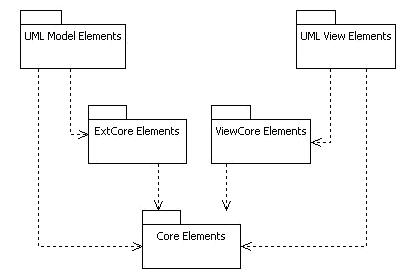
Modeling elements are largely divided into model, view, and diagram types. However, the diagram type is actually a part of the model or view types, and thus it is more accurate for the division to be made into model type and view type. Model is the element that contains actual information for the software model, and view is a visual expression of information contained in a specific model. One model can have multiple views and a view generally has reference to one model.
Before introducing the external API interfaces for modeling elements, let us look at a simple example of using modeling elements. Suppose we want to track StarUML™ application¡¯s top-level project element through namespace type elements like package, class, and interface, all the way down to the sub-elements of each namespace type element. In this case, the modeling element structure must be utilized. The following is the Jscript code for utilizing the modeling element structure.
var app, prj;
app = new ActiveXObject("StarUML.StarUMLApplication");
prj = app.GetProject();
VisitOwnedElement(prj);
function VisitOwnedElement(owner){
var elem;
for (var i = 0; i < owner.GetOwnedElementCount(); i++){
elem = owner.GetOwnedElementAt(i);
...
if (elem.IsKindOf("UMLNamespace")) VisitOwnedElement(elem);
}
}
In this example, all sub-elements that are in "OwnedElement" relationships with the top project element are recursively obtained. The most crucial part of this code is the user-defined function called VisitOwnedElement. This function takes an IUMLNamespace type element (which is a modeling element) as an argument and uses GetOwnedElementCount and GetOwnedElementAt, which are IUMLNamespace interface methods.
Information required for structuring the VisitOwnedElement function can be obtained from the relationships of the modeling elements. The following diagram illustrates the relationships between StarUML™ external API interface types that are related to the IMULNamespace interface example above.
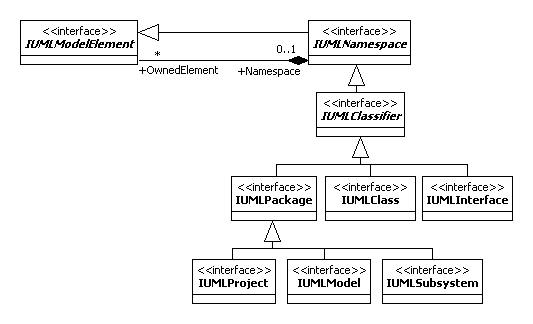
The IUMLNamespace interface is inherited from IUMLModelElement, which is a shared upper type for IUMLPackage, IUMLClass, and IUMLInterface types. IUMLNamespce also has an association called Namespace-OwnedElement. The diagram illustrates that the IUMLNamespace type modeling elements like IUMLPackage, IUMLClass, etc. have IUMLModelElement type elements below them known as OwnedElements. As such, external API modeling elements interfaces are defined according to the relationships between the modeling elements.
Note: Modeling element names that fall into the category of standard UML elements start with an "UML" prefix before the standard UML element names. For example, the name of a UML element called Actor is UMLActor. And for external API, the prefix "I" is used according to coding procedures, as in IUMLActor. Please refer to "Appendix B. List of UML Modeling Elements" for a complete listing of UML modeling elements and their names.
The diagram above illustrates that IUMLModelElement and IUMLNamespace interface types have an OwnedElement-Namespace association. Such associations are expressed as references in StarUML™'s external API interface. For example, Namespace association in the IUMLModelElement interface is expressed as below.
| IUMLModelElement |
|---|
| Namespace: IUMLNamespace |
Further, OwnedElement association in the IUMLNamespace interface is expressed as below. This is because the Multiplicity attribute of the metamodel is * and groups or list structures are used in the internal implementation of the program. As all associations in external API interface definition are expressed using the same convention, this applies to all other interfaces as well as IUMLModelElement-IUMLNamespace.
| IUMLNamespace |
|---|
| function GetOwnedElementCount(): Integer; |
| function GetOwnedElementAt(Index: Integer): IUMLModelElement; |
Core Elements are top parent interfaces for modeling elements. IElement, IModel, IView, IDiagram, and IDiagramView interfaces fall into this category, and they are organized as illustrated in the diagram below. The organization below should be given special attention as core group interface types are quite frequently used and they play critical roles. Associations between the interfaces should be given special emphasis here.
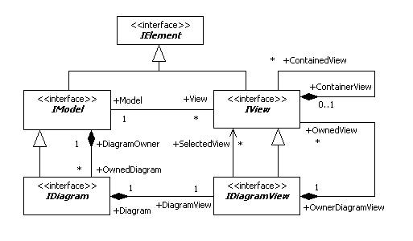
| Interface name | Description |
|---|---|
| IElement | Interface type that defines the top shared element for all modeling elements. |
| IModel | Interface type that defines the shared parent element for model elements. |
| IView | Interface type that defines the shared parent element for view elements. |
| IDiagram | Interface type that defines the shared parent element for diagram model elements. |
| IDiagramView | Interface type that defines the shared parent element for diagram view elements. |
IElement interface defines the top shared type for all modeling elements, and provides the following main methods.
| Main method | Description |
|---|---|
| GetGUID(): String | Function that returns the GUID (Global Unique Identifier) of modeling elements. GUID is encoded as Base64. |
| GetClassName(): String | Function that returns class names of modeling elements. Return value example: "UMLClass" |
| IsKindOf(ClassName: String): Boolean | Function that verifies whether the modeling element is the same type of element received as an argument. Argument value example: "UMLClass" |
| IsReadOnly(): Boolean | Function that verifies whether the modeling element is read-only. Attributes of read-only modeling elements cannot be modified. |
| MOF_GetAttribute(Name: String): String | Returns in strings the default type attribute values of modeling elements as defined by arguments. |
| MOF_GetReference(Name: String): IElement | Returns the reference type attribute (object reference) values of modeling elements as defined by arguments. |
| MOF_GetCollectionCount(Name: String): Integer | Returns the count number of items in reference collection as defined by arguments. |
| MOF_GetCollectionItem(Name: String; Index: Integer): IElement | Returns the attribute value (object reference) of the 'index' order item in the reference collection of modeling elements as defined by arguments. |
Among the methods of IElement interface, the MOF_XXX methods provide consistent ways to access the attribute values of each modeling element by string names. For instance, IUMLModelElement, a sub-type of IElement, has an attibribute called "Visibility". In general, the expression IUMLModelElement.Visibilty is used to get the value of this attribute. But the IElement.MOF_GetAttribute method can be used as illustrated below to get the value of the attribute by a string name called "Visibility". As such, MOF_XXX methods allow access to the attributes of basic type / reference type / reference collection type of each modeling element by string names, and this is very useful in many cases.
Note: String names of attributes, which are used as arguments in MOF_XXX methods, are the same as the respective attribute names.
The following example reads the value of the attribute "Visibility" of an IUMLModelElement type element using the IElement.MOF_GetAttribute method. It should be noted that the MOF_GetAttribute method uses strings as return values. In this example, return values can be "vkPrivate", "vkPublic", etc.
...
var elem = ... // Get reference to IUMLModelElement type element object.
var val = elem.MOF_GetAttribute("Visibility");
...
The IElement.MOF_GetReference method is used when reading reference type attribute values of modeling elements. The MOF_GetReference method returns reference to the IElement type objects. The following example reads the "Namespace" reference attribute value of IUMLModelElement type elements.
...
var elem = ... // Get reference to IUMLModelElement type element object.
var refElem = elem.MOF_GetReference("Namespace");
...
The IElement.MOF_GetCollectionItem method is used when reading reference collection type attribute values of modeling elements. The MOF_GetCollectionItem method receives the name of the reference collection type attribute and the item index as arguments. Collection item count number can be obtained using the MOF_GetCollectionCount method. Also, the MOF_GetCollectionItem method, like the MOF_GetReference method, returns reference to the IElement type objects. The following example reads the "Attributes" reference collection attribute values of IUMLClassifier type elements.
...
var elem = ... // Get reference to IUMLClassifier type element object.
var colCount = elem.MOF_GetCollectionCount("Attributes");
for (var i = 0; i < colCount; i++){
var colItem = elem.MOF_GetCollectionItem("Attributes", i);
...
}
Note: An error occurs if argument values for MOF_XXX methods are not defined with names of existing attributes.
IModel interface defines the shared parent type of model elements, and provides the following main properties and methods.
| Main Property | Description |
|---|---|
| Name: String | Name attribute. |
| Documentation: String | Documentation attribute. |
| Pathname: String | Path name of model element. Path name format includes the "::"
indicator for all upper level elements except the top project element.
Path name example: "::Application Model::Modeling Elements::UML Model
Elements". * Read-only. |
| Main Method | Description |
| AddAttachment(Attach: String); | Adds values to attachment file attributes (file path, URL). |
| FindByName(AName: String): IModel | Returns names of lower level model elements that are identical to the names received as arguments. |
| FindByRelativePathname(RelPath: String): IModel | Returns relative path names of overlapped lower level model elements that are identical to the relative path names received as arguments. The Name of the model itself is excluded in the argument. Argument value example: "Model_Management::UMLPackage" |
| ContainsName(AName: String): Boolean | Verifies whether there exists a lower level model element with the same name as defined by the argument. |
| CanDelete(): Boolean | Verifies whether the current model element is read-only. |
| GetViewCount: Integer | Returns count of view elements of the current model. |
| GetViewAt(Index: Integer): IView | Returns the (index)th view element of the current model. |
| GetOwnedDiagramCount: Integer | Returns count of diagram elements contained in the current model. |
| GetOwnedDiagramAt(Index: Integer): IDiagram | Returns the (index)th diagram element contained in the current model. |
The following example shows reading basic attribute values of a model element and resetting them.
function DoingSomething(elem){
if (elem.GetClassName() == "UMLClass"){
if (elem.IsReadOnly() != true){
elem.Name = "class_" + elem.Name;
elem.Documentation = "I am a class";
elem.AddAttachment("http://www.staruml.com");
}
}
}
The FindByName method and FindByRelativePathname method can be used to find lower level elements of a model element. The FindByName method returns the name of the first lower level element that is identical to the string value received as argument. The FindByName method performs a search only for the lower levels of the model element. To search for all lower level elements when the lower level elements are in an overlapped structure, the FindByRelativePathname method can be used. The following example shows how to use the FindByName and FindByRelativePathname methods.
var app = new ActiveXObject("StarUML.StarUMLApplication");
var rootElem = app.FindByPathname("::Application Model::Modeling Elements::UML Model Elements");
var elem = rootElem.FindByName("Model_Management");
var elem2 = rootElem.FindByRelativePathname("Model_Management::UMLPackage");
As shown in the diagram above, IModel interface and IView interface are in a Model-View association. An IModel type element can have many IView type elements, and each IView type element must have one IModel type element. The following example shows how to get reference to all IView type elements for each IUMLClass type element.
var elem = ... // Get reference to IModel type element.
if (elem.GetClassName() == "UMLClass"){
for (var i = 0; i < elem.GetViewCount(); i++){
var view = elem.GetViewAt(i);
...
}
}
As illustrated in the diagram above, the IModel interface and IDiagram interface are in a DiagramOwner-OwnedDiagram association. Since the IDiagram interface is a parent type for all diagram model types, reference to diagram elements contained in the model element can be obtained using the method shown in the following example.
var elem = ... // IModel type element
for (int i = 0; i < elem.GetOwnedDiagramCount(); i++){
var dgm = elem.GetOwnedDiagramAt(i);
...
}
IView interface defines the shared parent type of view elements, and provides the following main properties.
| Main property | Description |
|---|---|
| LineColor: String | Defines line color. Uses BGR format. Examples: "0xff0000" (blue); "0x00ff00" (green); "0x0000ff" (red); "0x000000" (black); "0xffffff" (white) |
| FillColor: String | Defines fill color. Uses BGR format. |
| FontFace: String | Defines font. Example: "Times New Roman" |
| FontColor: String | Defines font color. Uses BGR format. |
| FontSize: String | Defines font size. |
| FontStyle: Integer | Defines font style. Integers 1 (bold), 2 (italic), 3 (underline),
and 4 (strikeout) can be used separately or in combination. Example: 1 +
2 (bold & italic) * Does not apply to view elements with pre-defined default styles. |
| Selected: Boolean | Defines whether the current view element is selected. * Read-only. |
| Model: IModel | Defines reference to model element corresponding to the
current view element. * Read-only. |
| OwnerDiagramView: IDiagramView | Defines diagram view element containing the current view element. * Read-only. |
The following example shows setting basic attribute values for an IVew type element.
var view = ... // IView type element view.LineColor = "0x0000ff"; view.FillColor = "0x00ffff"; view.FontFace = "Times New Roman"; view.FontColor = "0x0000ff"; view.FontSize = "12"; view.FontStyle = 1;
View elements other than IUMLNoteView, IUMLNoteLinkView, and IUMLTextView type view elements have references to the model element. The following code can be used to obtain information on an IModel type element referenced by an IView type element.
var view = ... // IView type element var mdl = view.Model; ...
The following code can be used to obtain information on diagrams that contain an IView type element.
var view = ... // IView type element var dgmView = view.OwnerDiagramView; ...
IDiagram interface is inherited from IModel interface, and is the shared parent type of all diagram type model elements. IDiagram interfaces have the following main properties.
| Main property | Description |
|---|---|
| DefaultDiagram: Boolean | Defines whether the current diagram is the Default Diagram. Default Diagram is the diagram that automatically opens when a project is opened. Only class / use case / component / deployment diagrams can be set as the Default Diagram. |
| DiagramOwner: IModel | Defines an upper level model element that contains the
current diagram. * Read-only. |
| DiagramView: IDiagramView | Defines the diagram view element that corresponds to the
current diagram model. * Read-only. |
IDiagramView interface is inherited from IView interface, and is the shared parent type of all diagram view elements.
| Main property | Description |
|---|---|
| Diagram: IDiagram | Defines diagram model elements that correspond to the current diagram view element.* Read-only. |
| Main method | Description |
| GetSelectedViewCount: Integer | Returns count of view elements currently selected in the diagram. |
| GetSelectedViewAt(Index: Integer): IView | Returns the (index)th view element that is currently selected in the diagram. |
| GetOwnedViewCount: Integer | Returns count of view elements contained in the diagram. |
| GetOwnedViewAt(Index: Integer): IView | Returns the (index)th view element contained in the diagram. |
| LayoutDiagram() | Automatically reorganizes the diagram layout. |
| ExportDiagramAsBitmap(FileName: String) | Converts the diagram into a bitmap image and saves it as a file using the path name and file name defined. |
| ExportDiagramAsMetafile(FileName: String) | Converts the diagram into a Windows Metafile and saves it as a file using the path name and file name defined. |
| ExportDiagramAsJPEG(FileName: String) | Converts the diagram into a JPEG image and saves it as a file using the path name and file name defined. |
ExtCore elements provide a platform structure for model elements where UML extension functions can be applied. All model elements, which are applied with UML extension functions, are inherited from the IExtensibleModel interface. IExtensibleModel interface can have many constraints and tagged values as illustrated in the diagram below.
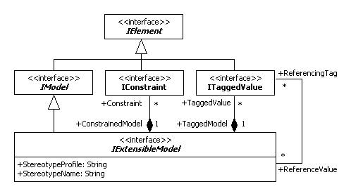
| Interface name | Description |
|---|---|
| IExtensibleModel | Shared upper level type of model elements that can be applied with UML extension functions. |
| IConstraint | Constraint element. |
| ITaggedValue | Tagged value element. |
IExtensibleModel interface defines the following main properties and methods.
| Main property | Description |
|---|---|
| StereotypeProfile: String | Defines name of the UML profile that defines the
stereotype applied in the current model element. * Read-only. |
| StereotypeName: String | Defines name of the stereotype applied in the current model element. * Read-only. |
| Main method | Description |
| GetConstraintCount: Integer | Returns count of constraint elements contained in the current model element. |
| GetConstraintAt(Index: Integer): IConstraint | Returns (index)th constraint element contained in the current model element. |
| AddConstraint(Name: String; Body: String): IConstraint | Creates a constraint element with name and value defined by arguments. |
| IndexOfConstraint(AConstraint: IConstraint): Integer | Returns index of the constraint element defined by arguments. |
| DeleteConstraint(Index: Integer) | Deletes (index)th constraint element contained in the current model element. |
| GetTaggedValueCount: Integer | Returns count of tagged value elements contained in the current model element. |
| GetTaggedValueAt(Index: Integer): ITaggedValue | Returns (index)th tagged value element contained in the current model element. |
| GetStereotype: IStereotype | Returns stereotype element applied in the current model element. |
| SetStereotype(const Name: WideString) | Defines stereotype value with string instead of using IStereotype element. |
| SetStereotype2(Profile: String; Name: String) | Defines UML profile with stereo definition and stereotype values. |
By convention, stereotype and tagged values should be defined through the UML profile. However, StarUML™ allows definition of stereotypes by string values for those unfamiliar with UML profiles. The following example shows reading the stereotype value from a certain IExtensibleModel type element and resetting it.
var elem = ... // Get reference to model element.
if (elem.IsKindOf("ExtensibleModel")){
var stereotypeStr = elem.StereotypeName;
if (stereotypeStr == ""){
elem.SetStereotype("Stereotype1");
}
}
Unlike stereotype, tagged values must be defined through the UML profile only. Please refer to "Chapter 7. Writing UML Profiles" for a detailed description of UML profile, stereotypes, and tagged values.
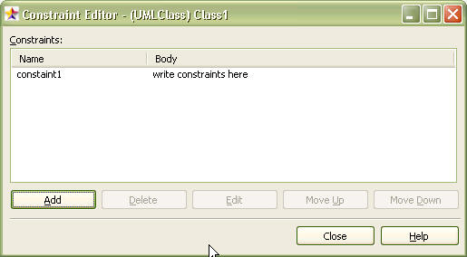
Constraints can be added or edited at the constraints editor in the StarUML™ application as illustrated above. In external API, constraints can be added or edited using the IConstraint interface. The IConstraint interface provides the following properties.
| Main property | Description |
|---|---|
| Name: String | Name of constraint. |
| Body: String | Contents of constraint. |
| ConstrainedModel: IExtensibleModel | IExtensibleModel type element applied with the constraint. |
Constraint elements can be created through the method provided by an IExtensibleModel type element. The following example shows adding, editing, and deleting a constraint for a certain IExtensibleModel type element.
var elem = ... // Get reference to IExtensibleModel type element.
var AConstraint = elem.AddConstraint("Constraint1", "Constraint Value1");
var constrName = AConstraint.Name;
var constrValue = AConstraint.Body;
var idx = elem.IndexOfConstraint(AConstraint);
elem.DeleteConstraint(idx);
ITaggedValue interface defines tagged value elements, and provides the following properties and methods. Please refer to "Chapter 7. Writing UML Profiles" for a detailed description of tagged value elements.
| Main property | Description |
|---|---|
| ProfileName: String | Defines the name of the UML profile that defines the current tagged value. * Read-only. |
| TagDefinitionSetName: String | Defines the tag definition set that contains the current tagged value. * Read-only. |
| Name: String | Defines the name of the tagged value defined in the UML profile. * Read-only. |
| DataValue: String | Defines tagged value. * Read-only. |
| TaggedModel: IExtensibleModel | Defines reference to the IExtensibleModel type element applied with the current
tagged value. * Read-only. |
| Main method | Description |
| GetTagDefinition: ITagDefinition | Returns tag definition element for the current tagged value. |
| GetTagDefinitionSet: ITagDefinitionSet | Returns tag definition set element for the current tagged value. |
| GetProfile: IProfile | Returns the UML profile element that defines the current tagged value. |
ViewCore group interface types are inherited from IView interface and provide a platform structure for all view type elements. ViewCore group contains many interface types. This section describes INodeView and IEdgeView interfaces, which are the most important interfaces.
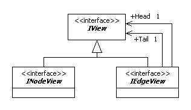
| Interface name | Description |
|---|---|
| INodeView | The top level interface type for node type views. |
| IEdgeView | The top level interface type for edge type views. |
INodeView interface is a platform type for node type view elements. A node type view is a view element that has an area like class views. INodeView interface provides the following main properties.
| Main property | Description |
|---|---|
| Left: Integer | Location information of the view (Left). |
| Top: Integer | Location information of the view (Top). |
| Width: Integer | Size information of the view (Width). |
| Height: Integer | Size information of the view (Height). |
| MinWidth: Integer | Defines the minimum size of the current view element (Width). * Read-only. |
| MinHeight: Integer | Defines the minimum size of the current view element (Height). * Read-only. |
| AutoResize: Boolean | Defines the autoresize property of the current view element. |
The following example shows changing the location and size of an INodeView type view.
var nodeView = ... // Get reference to INodeView type element. var l = nodeView.Left; var t = nodeView.Top; var w = nodeView.Width; var h = nodeView.Height; nodeView.Left = l * 2; nodeView.Top = t * 2; nodeView.Width = w * 2; nodeView.Height = h * 2;
IEdgeView interface is a platform type for edge type view elements. An edge type view is a line-based view element like dependency views. IEdgeView interface provides the following main properties.
| Main property | Description |
|---|---|
| LineStyle: LineStyleKind | Defines line style. |
| Points: IPoints | Defines line coordinates. |
| Tail: IView | Defines view element at the starting point of the line. |
| Head: IView | Defines view element at the ending point of the line. |
The following values defined in LineStyleKind enumeration can be used for the line style of edge type views.
| Value | Description |
|---|---|
| lsRectilinear | Rectilinear shape line style. |
| lsOblique | Oblique shape line style. |
The following example shows changing the line style for an edge type view.
lsRectilinear = 0;
lsOblique = 1;
var view = ... // Get reference to view element.
if (view.IsKindOf("EdgeView")){
view.LineStyle = lsRectilinear;
}
UML Model Elements group is further grouped into various packages as illustrated below. It should be noted that the UML model elements defined in the UML Model Elements group are StarUML™'s implementation of standard UML elements as defined in the UML standard specifications; they are almost identical to the standard UML elements. We will skip the detailed description of UML model elements in the UML Model Elements group here.
When creating a UML model element, IUMLFactory interface must be used. IUMLFactory interface provides creation methods not only for UML model elements but also UML diagram elements, UML view elements and all other UML modeling elements. An IUMLFactory type object can be obtained through an IStarUMLApplication type object as illustrated below.
var app = new ActiveXObject("StarUML.StarUMLApplication");
var facto = app.UMLFactory;
...
IUMLFactory provides the following UML model element creation methods.
| UML model element | Creation method |
|---|---|
| UMLModel | CreateModel(AOwner: UMLNamespace): IUMLModel |
| UMLSubsystem | CreateSubsystem(AOwner: UMLNamespace): IUMLSubsystem |
| UMLPackage | CreatePackage(AOwner: UMLNamespace): IUMLPackage |
| UMLClass | CreateClass(AOwner: UMLNamespace): IUMLClass |
| UMLInterface | CreateInterface(AOwner: UMLNamespace): IUMLInterface |
| UMLEnumeration | CreateEnumeration(AOwner: UMLNamespace): IUMLEnumeration |
| UMLSignal | CreateSignal(AOwner: UMLNamespace): IUMLSignal |
| UMLException | CreateException(AOwner: UMLNamespace): IUMLException |
| UMLComponent | CreateComponent(AOwner: UMLNamespace): IUMLComponent |
| UMLComponentInstance | CreateComponentInstance(AOwner: UMLNamespace): IUMLComponentInstance |
| UMLNode | CreateNode(AOwner: UMLNamespace): IUMLNode |
| UMLNodeInstance | CreateNodeInstance(AOwner: UMLNamespace): IUMLNodeInstance |
| UMLUseCase | CreateUseCase(AOwner: UMLNamespace): IUMLUseCase |
| UMLActor | CreateActor(AOwner: UMLNamespace): IUMLActor |
| UMLActivityGraph | CreateActivityGraph(AContext: UMLModelElement): IUMLActivityGraph |
| UMLStateMachine | CreateStateMachine(AContext: UMLModelElement): IUMLStateMachine |
| UMLCompositeState | CreateCompositeState(AOwnerState: UMLCompositeState): IUMLCompositeState |
| UMLCollaboration | CreateCollaboration(AOwner: UMLClassifier): IUMLCollaboration |
| UMLCollaboration | CreateCollaboration2(AOwner: UMLOperation): IUMLCollaboration |
| UMLCollaborationInstanceSet | CreateCollaborationInstanceSet(AOwner: UMLClassifier): IUMLCollaborationInstanceSet |
| UMLCollaborationInstanceSet | CreateCollaborationInstanceSet2(AOwner: UMLOperation): IUMLCollaborationInstanceSet |
| UMLInteraction | CreateInteraction(ACollaboration: UMLCollaboration): IUMLInteraction |
| UMLInteractionInstanceSet | CreateInteractionInstanceSet(ACollaborationInstanceSet: UMLCollaborationInstanceSet): IUMLInteractionInstanceSet |
| UMLActionState | CreateActionState(AOwnerState: UMLCompositeState): IUMLActionState |
| UMLSubactivityState | CreateSubactivityState(AOwnerState: UMLCompositeState): IUMLSubactivityState |
| UMLPseudostate | CreatePseudostate(AOwnerState: UMLCompositeState): IUMLPseudostate |
| UMLFinalState | CreateFinalState(AOwnerState: UMLCompositeState): IUMLFinalState |
| UMLPartition | CreatePartition(AActivityGraph: UMLActivityGraph): IUMLPartition |
| UMLSubmachineState | CreateSubmachineState(AOwnerState: UMLCompositeState): IUMLSubmachineState |
| UMLAttribute | CreateAttribute(AClassifier: UMLClassifier): IUMLAttribute |
| UMLAttribute | CreateQualifier(AAssociationEnd: UMLAssociationEnd): IUMLAttribute |
| UMLOperation | CreateOperation(AClassifier: UMLClassifier): IUMLOperation |
| UMLParameter | CreateParameter(ABehavioralFeature: UMLBehavioralFeature): IUMLParameter |
| UMLTemplateParameter | CreateTemplateParameter(AClass: UMLClass): IUMLTemplateParameter |
| UMLTemplateParameter | CreateTemplateParameter2(ACollaboration: UMLCollaboration): IUMLTemplateParameter |
| UMLEnumerationLiteral | CreateEnumerationLiteral(AEnumeration: UMLEnumeration): IUMLEnumerationLiteral |
| UMLUninterpretedAction | CreateEntryAction(AState: UMLState): IUMLUninterpretedAction |
| UMLUninterpretedAction | CreateDoAction(AState: UMLState): IUMLUninterpretedAction |
| UMLUninterpretedAction | CreateExitAction(AState: UMLState): IUMLUninterpretedAction |
| UMLUninterpretedAction | CreateEffect(ATransition: UMLTransition): IUMLUninterpretedAction |
| UMLSignalEvent | CreateSignalEvent(ATransition: UMLTransition): IUMLSignalEvent |
| UMLCallEvent | CreateCallEvent(ATransition: UMLTransition): IUMLCallEvent |
| UMLTimeEvent | CreateTimeEvent(ATransition: UMLTransition): IUMLTimeEvent |
| UMLChangeEvent | CreateChangeEvent(ATransition: UMLTransition): IUMLChangeEvent |
| UMLClassifierRole | CreateClassifierRole(ACollaboration: UMLCollaboration): IUMLClassifierRole |
| UMLObject | CreateObject(ACollaborationInstanceSet: UMLCollaborationInstanceSet): IUMLObject |
| UMLObject | CreateObject2(AOwner: UMLNamespace): IUMLObject |
| UMLTransition | CreateTransition(AStateMachine: UMLStateMachine; Source: UMLStateVertex; Target: UMLStateVertex): IUMLTransition |
| UMLDependency | CreateDependency(AOwner: UMLNamespace; Client: UMLModelElement; Supplier: UMLModelElement): IUMLDependency |
| UMLAssociation | CreateAssociation(AOwner: UMLNamespace; End1: UMLClassifier; End2: UMLClassifier): IUMLAssociation |
| UMLAssociationClass | CreateAssociationClass(AOwner: UMLNamespace; AAssociation: UMLAssociation; AClass: UMLClass): IUMLAssociationClass |
| UMLGeneralization | CreateGeneralization(AOwner: UMLNamespace; Parent: UMLGeneralizableElement; Child: UMLGeneralizableElement): IUMLGeneralization |
| UMLLink | CreateLink(ACollaborationInstanceSet: UMLCollaborationInstanceSet; End1: UMLInstance; End2: UMLInstance): IUMLLink |
| UMLAssociationRole | CreateAssociationRole(ACollaboration: UMLCollaboration; End1: UMLClassifierRole; End2: UMLClassifierRole): IUMLAssociationRole |
| UMLStimulus | CreateStimulus(AInteractionInstanceSet: UMLInteractionInstanceSet; Sender: UMLInstance; Receiver: UMLInstance; Kind: UMLFactoryMessageKind): IUMLStimulus |
| UMLStimulus | CreateStimulus2(AInteractionInstanceSet: UMLInteractionInstanceSet; Sender: UMLInstance; Receiver: UMLInstance; CommunicationLink: UMLLink; Kind: UMLFactoryMessageKind): IUMLStimulus |
| UMLMessage | CreateMessage(AInteraction: UMLInteraction; Sender: UMLClassifierRole; Receiver: UMLClassifierRole; Kind: UMLFactoryMessageKind): IUMLMessage |
| UMLMessage | CreateMessage2(AInteraction: UMLInteraction; Sender: UMLClassifierRole; Receiver: UMLClassifierRole; CommunicationConnection: UMLAssociationRole; Kind: UMLFactoryMessageKind): IUMLMessage |
| UMLInclude | CreateInclude(AOwner: UMLNamespace; Includer: UMLUseCase; Includee: UMLUseCase): IUMLInclude |
| UMLExtend | CreateExtend(AOwner: UMLNamespace; Extender: UMLUseCase; Extendee: UMLUseCase): IUMLExtend |
| UMLRealization | CreateRealization(AOwner: UMLNamespace; Client: UMLModelElement; Supplier: UMLModelElement): IUMLRealization |
The following example shows creating UML model elements using IUMLFactory.
var app = new ActiveXObject("StarUML.StarUMLApplication");
var facto = app.UMLFactory;
var pjt = app.GetProject();
var mdlElem = facto.CreateModel(pjt); // Create UMLModel element.
var pkgElem = facto.CreatePackage(mdlElem); // Create UMLPackage element.
var clsElem1 = facto.CreateClass(pkgElem); // Create UMLClass element.
var clsElem2 = facto.CreateClass(pkgElem); // Create UMLClass element.
var attrElem = facto.CreateAttribute(clsElem1); // Create UMLAttribute element.
var opElem = facto.CreateOperation(clsElem1); // Create UMLOperation element.
var paramElem1 = facto.CreateParameter(opElem); // Create UMLParameter element.
var paramElem2 = facto.CreateParameter(opElem); // Create UMLParameter element.
paramElem1.TypeExpression = "String";
paramElem2.Type_ = clsElem2;
...
The DeleteModel method of IStarUMLApplication interface can be used to delete UML model elements. The CanDelete method of IModel interface can be used to check whether the current model element can be deleted. If the current model element is read-only, the CanDelete method returns "false". Additional caution should be taken because when a model element is deleted, all its lower level model elements, and all the view elements related to the current model element are automatically deleted altogether. The following example is a continuation of the example above, showing deleting a class element.
...
if (clsElem1.CanDelete() == true){
app.DeleteModel(clsElem1);
}
...
IUMLFactory can be used to create UML diagram elements like creating UML model elements. IUMLFactory provides the following diagram-related creation methods.
| UML diagram element | Creation method |
|---|---|
| UMLClassDiagram | CreateClassDiagram(AOwner: Model): IUMLClassDiagram |
| UMLUseCaseDiagram | CreateUseCaseDiagram(AOwner: Model): IUMLUseCaseDiagram |
| UMLSequenceDiagram | CreateSequenceDiagram(AOwner: UMLInteractionInstanceSet): IUMLSequenceDiagram |
| UMLSequenceRoleDiagram | CreateSequenceRoleDiagram(AOwner: UMLInteraction): IUMLSequenceRoleDiagram |
| UMLCollaborationDiagram | CreateCollaborationDiagram(AOwner: UMLInteractionInstanceSet): IUMLCollaborationDiagram |
| UMLCollaborationRoleDiagram | CreateCollaborationRoleDiagram(AOwner: UMLInteraction): IUMLCollaborationRoleDiagram |
| UMLStatechartDiagram | CreateStatechartDiagram(AOwner: UMLStateMachine): IUMLStatechartDiagram |
| UMLActivityDiagram | CreateActivityDiagram(AOwner: UMLActivityGraph): IUMLActivityDiagram |
| UMLComponentDiagram | CreateComponentDiagram(AOwner: Model): IUMLComponentDiagram |
| UMLDeploymentDiagram | CreateDeploymentDiagram(AOwner: Model): IUMLDeploymentDiagram |
The method for creating UML diagram elements is almost identical to the method for creating UML model elements. One difference for UML diagram elements is that view type elements are automatically created when creating model type elements. The following example shows creating a UML diagram element and accessing the automatically created UML diagram view element.
var app = new ActiveXObject("StarUML.StarUMLApplication");
var pkgElem = ... // Upper level model element to contain UML diagram element.
var dgmElem = facto.CreateClassDiagram(pkgElem); // Create UMLClassDiagram.
var dgmViewElem = dgmElem.DiagramView; // Automatically created diagram view element.
app.OpenDiagram(dgmElem);
...
Since UML diagram elements are regarded as UML model elements, they can be deleted using the DeleteModel method of IStarUMLApplication interface, like deleting UML model elements. The CanDelete method of IModel interface can be used to check whether the diagram element can be deleted.
IUMLFactory can also be used when creating view elements. IUMLFactory methods related to view element creation are as follows.
| UML view element | Creation method |
|---|---|
| UMLNoteView | CreateNoteView(ADiagramView: DiagramView): IUMLNoteView |
| UMLNoteLinkView | CreateNoteLinkView(ADiagramView: DiagramView; ANote: UMLNoteView; LinkTo: View): IUMLNoteLinkView |
| UMLTextView | CreateTextView(ADiagramView: DiagramView): IUMLTextView |
| UMLModelView | CreateModelView(ADiagramView: DiagramView; AModel: UMLModel): IUMLModelView |
| UMLSubsystemView | CreateSubsystemView(ADiagramView: DiagramView; AModel: UMLSubsystem): IUMLSubsystemView |
| UMLPackageView | CreatePackageView(ADiagramView: DiagramView; AModel: UMLPackage): IUMLPackageView |
| UMLClassView | CreateClassView(ADiagramView: DiagramView; AModel: UMLClass): IUMLClassView |
| UMLInterfaceView | CreateInterfaceView(ADiagramView: DiagramView; AModel: UMLInterface): IUMLInterfaceView |
| UMLEnumerationView | CreateEnumerationView(ADiagramView: DiagramView; AModel: UMLEnumeration): IUMLEnumerationView |
| UMLSignalView | CreateSignalView(ADiagramView: DiagramView; AModel: UMLSignal): IUMLSignalView |
| UMLExceptionView | CreateExceptionView(ADiagramView: DiagramView; AModel: UMLException): IUMLExceptionView |
| UMLComponentView | CreateComponentView(ADiagramView: DiagramView; AModel: UMLComponent): IUMLComponentView |
| UMLComponentInstanceView | CreateComponentInstanceView(ADiagramView: DiagramView; AModel: UMLComponentInstance): IUMLComponentInstanceView |
| UMLNodeView | CreateNodeView(ADiagramView: DiagramView; AModel: UMLNode): IUMLNodeView |
| UMLNodeInstanceView | CreateNodeInstanceView(ADiagramView: DiagramView; AModel: UMLNodeInstance): IUMLNodeInstanceView |
| UMLActorView | CreateActorView(ADiagramView: DiagramView; AModel: UMLActor): IUMLActorView |
| UMLUseCaseView | CreateUseCaseView(ADiagramView: DiagramView; AModel: UMLUseCase): IUMLUseCaseView |
| UMLCollaborationView | CreateCollaborationView(ADiagramView: DiagramView; AModel: UMLCollaboration): IUMLCollaborationView |
| UMLCollaborationInstanceSetView | CreateCollaborationInstanceSetView(ADiagramView: DiagramView; AModel: UMLCollaborationInstanceSet): IUMLCollaborationInstanceSetView |
| UMLGeneralizationView | CreateGeneralizationView(ADiagramView: DiagramView; AModel: UMLGeneralization; Parent: View; Child: View): IUMLGeneralizationView |
| UMLAssociationView | CreateAssociationView(ADiagramView: DiagramView; AModel: UMLAssociation; End1: View; End2: View): IUMLAssociationView |
| UMLAssociationClassView | CreateAssociationClassView(ADiagramView: DiagramView; AModel: UMLAssociationClass; AssociationView: View; ClassView: View): IUMLAssociationClassView |
| UMLDependencyView | CreateDependencyView(ADiagramView: DiagramView; AModel: UMLDependency; Client: View; Supplier: View): IUMLDependencyView |
| UMLRealizationView | CreateRealizationView(ADiagramView: DiagramView; AModel: UMLRealization; Client: View; Supplier: View): IUMLRealizationView |
| UMLIncludeView | CreateIncludeView(ADiagramView: DiagramView; AModel: UMLInclude; Base: View; Addition: View): IUMLIncludeView |
| UMLExtendView | CreateExtendView(ADiagramView: DiagramView; AModel: UMLExtend; Base: View; Extension: View): IUMLExtendView |
| UMLColObjectView | CreateObjectView(ADiagramView: DiagramView; AModel: UMLObject): IUMLColObjectView |
| UMLSeqObjectView | CreateSeqObjectView(ADiagramView: UMLSequenceDiagramView; AModel: UMLObject): IUMLSeqObjectView |
| UMLColClassifierRoleView | CreateClassifierRoleView(ADiagramView: DiagramView; AModel: UMLClassifierRole): IUMLColClassifierRoleView |
| UMLSeqClassifierRoleView | CreateSeqClassifierRoleView(ADiagramView: UMLSequenceRoleDiagramView; AModel: UMLClassifierRole): IUMLSeqClassifierRoleView |
| UMLLinkView | CreateLinkView(ADiagramView: DiagramView; AModel: UMLLink; End1: View; End2: View): IUMLLinkView |
| UMLAssociationRoleView | CreateAssociationRoleView(ADiagramView: DiagramView; AModel: UMLAssociationRole; End1: View; End2: View): IUMLAssociationRoleView |
| UMLColStimulusView | CreateStimulusView(ADiagramView: UMLCollaborationDiagramView; AModel: UMLStimulus; LinkView: View): IUMLColStimulusView |
| UMLSeqStimulusView | CreateSeqStimulusView(ADiagramView: UMLSequenceDiagramView; AModel: UMLStimulus; Sender: View; Receiver: View): IUMLSeqStimulusView |
| UMLColMessageView | CreateMessageView(ADiagramView: UMLCollaborationRoleDiagramView; AModel: UMLMessage; AssociationRoleView: View): IUMLColMessageView |
| UMLSeqMessageView | CreateSeqMessageView(ADiagramView: UMLSequenceRoleDiagramView; AModel: UMLMessage; Sender: View; Receiver: View): IUMLSeqMessageView |
| UMLStateView | CreateStateView(ADiagramView: UMLStatechartDiagramView; AModel: UMLCompositeState): IUMLStateView |
| UMLSubmachineStateView | CreateSubmachineStateView(ADiagramView: UMLStatechartDiagramView; AModel: UMLSubmachineState): IUMLSubmachineStateView |
| UMLPseudostateView | CreatePseudostateView(ADiagramView: DiagramView; AModel: UMLPseudostate): IUMLPseudostateView |
| UMLFinalStateView | CreateFinalStateView(ADiagramView: DiagramView; AModel: UMLFinalState): IUMLFinalStateView |
| UMLActionStateView | CreateActionStateView(ADiagramView: UMLActivityDiagramView; AModel: UMLActionState): IUMLActionStateView |
| UMLSubactivityStateView | CreateSubactivityStateView(ADiagramView: UMLActivityDiagramView; AModel: UMLSubactivityState): IUMLSubactivityStateView |
| UMLSwimlaneView | CreateSwimlaneView(ADiagramView: UMLActivityDiagramView; AModel: UMLPartition): IUMLSwimlaneView |
| UMLTransitionView | CreateTransitionView(ADiagramView: DiagramView; AModel: UMLTransition; Source: View; Target: View): IUMLTransitionView |
The following example creates IUMLClassView type elements in the class diagram view, and creates the IUMLDependencyView and IUMLAssociationView that link the two elements. As model elements are required for creating view elements, model elements are created first.
var app = new ActiveXObject("StarUML.StarUMLApplication");
var factory = app.UMLFactory;
// Get reference to existing model elements.
var rootElem = app.FindByPathname("::Logical View");
if (rootElem != null){
app.BeginUpdate();
try{
// Create model elements.
var class1 = factory.CreateClass(rootElem);
var class2 = factory.CreateClass(rootElem);
var dependency = factory.CreateDependency(rootElem, class1, class2);
var association = factory.CreateAssociation(rootElem, class1, class2);
var diagram = factory.CreateClassDiagram(rootElem);
var diagramView = diagram.DiagramView;
// Create view elements.
var classView1 = factory.CreateClassView(diagramView, class1);
var classView2 = factory.CreateClassView(diagramView, class2);
var dependencyView = factory.CreateDependencyView(diagramView, dependency,
classView1, classView2);
var associationView = factory.CreateAssociationView(diagramView, association,
classView1, classView2);
// Adjust view element attributes.
classView1.Left = 100;
classView1.Top = 100;
classView2.Left = 300;
classView2.Top = 100;
app.OpenDiagram(diagram);
}
finally{
app.EndUpdate();
}
}
The DeleteView method of IStarUMLApplication interface can be used to delete UML view elements. Caution should be taken in that when a model element is deleted, its view elements are automatically deleted together, but when a view element is deleted its model element is not deleted.
The following example shows deleting view elements that were created in the example above.
... app.DeleteView(dependencyView); app.DeleteView(associationView);
The first thing to acquire in order to use StarUML™'s external API is reference to a StarUMLApplication object. All other objects can be access through this. The IStarUMLApplication interface is an abstraction of the StarUML™ application itself and contains the following methods.
In the StarUML™'s diagram area, opened diagrams are managed under tabs as illustrated below. The currently activated diagram is called active diagram.
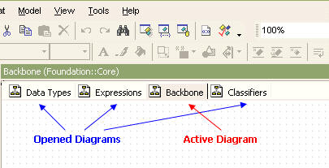
To open a diagram, use the following code. If the diagram is not currently open, the diagram will open and automatically become active. If the diagram is already opened, it will be set as the active diagram.
var app = new ActiveXObject("StarUML.StarUMLApplication");
var dgm = ... // Assign a diagram to open.
app.OpenDiagram(dgm);
To obtain reference to opened diagrams, use the GetOpenedDiagramCount and GetOpenedDiagramAt methods.
var app = new ActiveXObject("StarUML.StarUMLApplication");
...
for (i=0; i<app.GetOpenedDiagramCount(); i++) {
var dgm = app.GetOpenedDiagramAt(i);
...
}
Opened diagrams can also be closed. In this case, the CloseDiagram method can be used. Use the CloseAllDiagram method to close all diagrams, or use the CloseActiveDiagram method to close the active diagram.
var app = new ActiveXObject("StarUML.StarUMLApplication");
var dgm = ... // Assign a diagram to close.
app.CloseDiagram(dgm);
The [Output] tab in StarUML™'s information area provides the interface for recoding and showing the application execution log to the user.
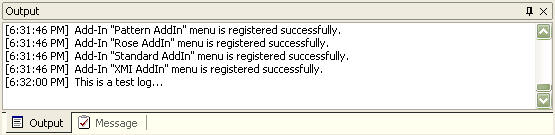
To record log in the [Output] section, use the Log method as shown in the following example.
var app = new ActiveXObject("StarUML.StarUMLApplication");
app.Log("This is a test log...");
StarUML™ uses message items to display specific messages to the user. Message items are used to notify details or elements that were not found in element find or did not pass model verification. There are three types of message item: general items, element find result items, and model verification result items.
| Value | literal | Description |
|---|---|---|
| 0 | mkGeneral | General message items. |
| 1 | mkFindResult | Message items for element find results. |
| 2 | mkVerificationResult | Message items for model verification results. |
When adding a message item, the message item's type, content and related element must be referenced. The following example shows adding three types of message with different message contents to reference a project element. The result is shown in the following illustration.
var app = new ActiveXObject("StarUML.StarUMLApplication");
app.AddMessageItem(0, "This is general message...", app.GetProject());
app.AddMessageItem(1, "This is find result message...", app.GetProject());
app.AddMessageItem(2, "This is verification result message...", app.GetProject());
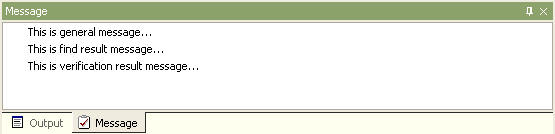
Double-clicking a message automatically selects the related element in the model explorer, and if the element is expressed in a diagram, the diagram becomes active.
Elements can be searched by pathnames. For example, the pathname for element Class1 located under Package2 and under Package1 is "::Package1::Package2::Class1". A pathname is a series of element names linked by the "::" delimiter. The search always starts from the top level project. Since the name of the top level project is always a null string, any pathname starts with "::". However, it is possible to omit the initial "::". In other words, an expression such as "Package1::Package2::Class2" is regarded as the same pathname as the one above. The following example shows obtaining reference to a model element by pathname.
var app = new ActiveXObject("StarUML.StarUMLApplication");
var elem = app.FindByPathname("::Logical View::Class1");
...
When the user makes a specific modification or performs a specific command through API, the modification is immediately updated and shown in StarUML™. However, when performing complex tasks through API, many commands have to be executed in one go, and if each task is applied each time, the display will clog up and processing speed will decrease. In such a case, it is better to stop the modification update, perform the various complex tasks, and then apply the changes all together at the same time. StarUMLApplication object provides such functions through the BeginUpdate and EndUpdate methods.
The user can call the BeginUpdate method before performing complex and long process tasks, and call the EndUpdate method immediately after the tasks to apply the changes. Care must be taken in that no changes will be applied at all if EndUpdate cannot be called, due to errors or other problems while processing tasks after calling BeginUpdate. To prevent such problems, exception process techniques (especially, try ¡¦ finally) should be used as shown in the following example.
var app = new ActiveXObject("StarUML.StarUMLApplication");
...
app.BeginUpdate();
try {
... // Place tasks to process here.
}
finally {
app.EndUpdate(); // The finally block will be executed even if an exception occurs in the try block.
}
...
For indicating the end of modifications and triggering application of the changes, the EndUpdate2 method can also be used instead of the EndUpdate method. Both methods have the same effect, but EndUpdate2 allows more detailed control. This method performs more detailed control through the following two arguments.
| Argument | Type | Description |
|---|---|---|
| CompletelyRebuild | Boolean | Rebuilds all tree structures displayed in the model explorer from the beginning. Setting the value of this argument to 'True' may allow faster application of changes if the changes include creation or modification of large quantities of model elements. The EndUpdate() method is the same as having this value set as 'False'. |
| UseUpdateLock | Boolean | Applies the insert/delete/modify results of the tree items in the model explorer in one go. In other words, changes in the tree items are not visually displayed in the GUI but are processed at at the same time. Setting the value of this argument to 'True' when the model is very large will cause the process to take a relatively longer time, even if the model elements modified are few. When this value is 'True', the process time is proportional to the total number of model elements rather than the number of model elements modified. The EndUpdate() method is the same as having this value set as 'True'. |
It is possible to undo or redo any user-performed actions. The same applies for any commands performed through API. If a command is executed twice and the user wishes to undo the tasks, undo must be performed twice. However, there are many cases where the user wants a combination of different commands to be processed as a single action. For instance, when performing undo after writing code to automatically add Get function and Set function for a specific attribute, the undo should be able to revert the code to the time before Get function and Set function were added. However, to add Get/Set functions, many commands must be used together in combinations. In such a case, multiple commands can be handled as a single group and processed as one action.
StarUMLApplication object allows the execution of many commands as a single action by using the BeginGroupAction and EndGroupAction methods. When calling the BeginGroupAction method, a new virtual group action is created. All other tasks performed after this are added to the group action, and when the EndGroupAction method is called, the action grouping is complete. After executing BeginGroupAction, even if an error occurs in the tasks included in the group, EndGroupAction must be called, and therefore exception processes (especially try ¡¦ finally) must be handled properly. This group action can be managed as a single action through undo or redo.
var app = new ActiveXObject("StarUML.StarUMLApplication");
...
app.BeginGroupAction();
try {
...
}
finally {
app.EndGroupAction();
}
...
When calling the BeginGroupAction method, the result is the same as calling BeginUpdate. In the same way, when calling the EndGroupAction method, the result is the same as calling EndUpdate. In other words, changes are not applied until the group is properly completed. Therefore the BeginUpdate or EndUpdate methods must not be used between BeginGroupAction and EndGroupAction.
StarUML™ allows ways to acquire information on the model elements or view elements selected by the user, and to select certain elements by force. All of these functions are defined in ISelectionManager interface.
In order to acquire the list of model elements or view elements currently selected, reference to SelectionManager must be acquired first. And then codes like the following example can be used to acquire reference to the selected model elements or view elements.
var app = new ActiveXObject("StarUML.StarUMLApplication");
var selmgr = app.SelectionManager;
// List selected model elements.
for (i=0; i<selmgr.GetSelectedModelCount(); i++) {
var m = selmgr.GetSelectedModelAt(i);
...
}
// List selected view elements.
for (i=0; i<selmgr.GetSelectedViewCount(); i++) {
var v = selmgr.GetSelectedViewAt(i);
...
}
Reference can be made to the currently active diagram (the diagram currently displayed on the StarUML™ screen). A diagram is always managed by two separate objects: Diagram and DiagramView. References to both Diagram object and DiagramView object can be acquired directly.
var app = new ActiveXObject("StarUML.StarUMLApplication");
var selmgr = app.SelectionManager;
var dgm = selmgr.ActiveDiagram // Diagram object of the currently active diagram
var dgmview = selmgr.ActiveDiagram // DiagramView object of the currently active diagram
To select specific model elements (e.g. Class, Interface, Component, ...), use the SelectModel method. Calling this method deselects all of the currently selected elements and selects just one of the elements. To maintain the current selection and add model elements to the selection, the SelectAdditionalModel method must be used.
var app = new ActiveXObject("StarUML.StarUMLApplication");
var selmgr = app.SelectionManager;
var m = ... // Assign reference to model element to select.
...
selmgr.SelectModel(m); // Select only the model element 'm'.
...
selmgr.SelectAdditionalModel(m); // Add model element 'm' to selection.
...
To cancel the selection of model elements, use the DeselectModel method as shown in the example below.
var app = new ActiveXObject("StarUML.StarUMLApplication");
var selmgr = app.SelectionManager;
var m = ... // Assign reference to model element to deselect.
...
selmgr.DeselectModel(m); // Deselect model element 'm'.
...
selmgr.DelselectAllModels(); // Deselect all model elements.
...
To select view elements illustrated in a diagram, use the SelectView method. Calling this method deselects all of the currently selected view elements and selects just one of them. To maintain the current selection and add model view elements to the selection, the SelectAdditionalView method must be used.
var app = new ActiveXObject("StarUML.StarUMLApplication");
var selmgr = app.SelectionManager;
var v = ...
...
selmgr.SelectView(v);
...
selmgr.SelectAdditionalView(v);
...
To cancel the selection of view elements, use the DeselectView method as shown in the example below.
var app = new ActiveXObject("StarUML.StarUMLApplication");
var selmgr = app.SelectionManager;
var v = ... // Assign reference to view element to add.
...
selmgr.DeselectView(v); // Select only the view element 'v'.
...
selmgr.DelselectAllViews(); // Add view element 'v' to the selection.
...
View elements in certain areas can be selected by entering coordinates for the area in the currently active diagram. Use the SelectArea method to do this, or use the SelectAdditionalArea method to add elements to the selection. The following example selects all view elements located within the area of the coordinates (100, 100, 500, 300) in the currently active diagram.
var app = new ActiveXObject("StarUML.StarUMLApplication");
var selmgr = app.SelectionManager;
selmgr.SelectArea(100, 100, 500, 300);
StarUML™ provides two types of dialog for selecting specific elements: a tree view type, ElementSelector, and a list view type, ElementListSelector. ElementSelector is the most commonly used method as it allows selection of elements in a tree view structure just as in the model explorer. ElementListSelector is used to list and select elements of the same types.
ElementSelector is a dialog that displays a tree view structure and allows the user to select an element just like the model explorer as shown in the illustration below. The user can select an element or set it to select nothing at all (set a null value).
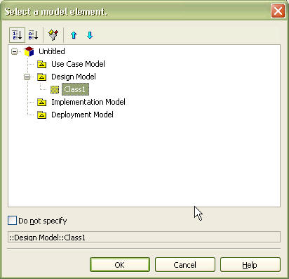
Reference to an ElementSelector dialog object can be acquired through a StarUMLApplication object as shown in the example below.
var app = new ActiveXObject("StarUML.StarUMLApplication");
var sel_dlg = app.ElementSelector;
ElementSelector dialog provides the following property and methods.
| Main property | Description |
|---|---|
| AllowNull: Boolean | Defines whether to allow no selection (setting a null value). |
| Main method | Description |
| Filter(Filtering: ElementFilteringKind) | Defines what type of modeling elements to display. Value can be any
one of the following. fkAll (0): Shows all modeling elements. fkPackages (1): Shows UMLPackage type elements (UMLPackage, UMLModel, UMLSubsystem) only. fkClassifiers (2): Shows UMLClassifier type elements only. |
| ClearSelectableModels | Clears selectable element type list. |
| AddSelectableModel(ClassName: String) | Adds the selected type to the selectable element type list. Argument value example: "UMLClass" |
| RemoveSelectableModel(ClassName: String) | Removes the selected type from the selectable element type list. Argument value example: "UMLClass" |
| Execute(Title: String): Boolean | Executes the dialog. Sets the dialog title with the argument string. |
| GetSelectedModel: IModel | Returns reference to the user-selected elements. |
The following example shows the whole process of executing ElementSelector dialog and acquiring the selected elements.
fkClassifiers = 2;
var app = new ActiveXObject("StarUML.StarUMLApplication");
var sel_dlg = app.ElementSelector;
sel_dlg.AllowNull = false;
sel_dlg.Filter(fkClassifiers)
sel_dlg.ClearSelectableModels();
sel_dlg.AddSelectableModel("UMLModel");
sel_dlg.AddSelectableModel("UMLSubsystem");
sel_dlg.AddSelectableModel("UMLPackage");
if (sel_dlg.Execute("Select a classifier type element.")){
var elem = sel_dlg.GetSelectedModel;
...
}
else{
// If canceled, ...
}
ElementListSelector is a dialog that displays a list of selectable elements in a list view and allows the user to select an element.
Reference to an ElementListSelector dialog object can be acquired through a StarApplication object as shown in the example below.
var app = new ActiveXObject("StarUML.StarUMLApplication");
var sel_dlg = app.ElementListSelector;
ElementListSelector dialog provides the following property and methods.
| Main property | Description |
|---|---|
| AllowNull: Boolean | Defines whether to allow no selection (setting a null value). |
| Main method | Description |
| ClearListElements | Clears the list. |
| AddListElement(AModel: IModel) | Adds the model element defined by argument to the list. |
| AddListElementsByCollection(AModel: IModel; CollectionName: String; ShowInherited: Boolean) | Adds the collection elements of the model element defined by argument to the list. 'ShowInherited' argument defines whether to trace the inheritance structure of the selected model element and add collection items of upper level elements to the list. |
| AddListElementsByClass(MetaClassName: String; IncludeChildInstances: Boolean) | Adds the elements of the types defined by argument to the list. If the 'IncludeChildInstances' argument is 'true', child elements of the selected type are also added to the list. |
| Execute(Title: String): Boolean | Executes the dialog. Sets the dialog title with the argument string. |
| GetSelectedModel: IModel | Returns reference to the user-selected elements. |
The following example executes ElementListSelector dialog, and prompts the user to select an element from the operation collection of a specific class element. Since the "ShowInherited" argument is "true", if there are parent classes for the selected class element, the operation collection of this class element can also be selected.
var app = new ActiveXObject("StarUML.StarUMLApplication");
var sel_dlg = app.ElementListSelector;
sel_dlg.AllowNull = false;
sel_dlg.ClearListElements();
var class = ... // Get reference to class element.
sel_dlg.AddListElementsByCollection(class, "Operations", true);
if (sel_dlg.Execute("Select an operation element.")){
var selElem = sel_dlg.GetSelectedModel;
...
}
else{
// If canceled, ...
}
The example above used the AddListElementsByCollection method. The following example now uses the AddListElementsByClass method. Since the "IncludeChildInstances" argument is "true", elements of the selected types and all their child elements are added to the list.
var app = new ActiveXObject("StarUML.StarUMLApplication");
var sel_dlg = app.ElementListSelector;
sel_dlg.AllowNull = false;
sel_dlg.ClearListElements();
sel_dlg.AddListElementsByClass("UMLClassifier", true);
if (sel_dlg.Execute("Select a classifier type element.")){
var selElem = sel_dlg.GetSelectedModel;
...
}
else{
// If canceled ...
}
This section describes the concept of StarUML™ meta-model elements and their usage. As introduced in "Chapter 2. StarUML Architecture" StarUML™ meta-model elements are elements that belong to the Non_Modeling Elements::MetaModeling Elements package.
StarUML™ meta-model elements provide methods for meta-level access to the StarUML™ modeling elements described in above section. In short, meta-model elements are the elements that define these modeling elements. Using meta-model elements allows listing of elements for each modeling element and accessing information on modeling elements in the currently open project. Although the concept of meta-model may seem difficult for novice users, it is highly recommended that you read the following descriptions, as meta-model comes in really handy when using StarUML™.
Before explaining the meta-model concept, let us look at the following simple example for a brief overview of using StarUML™ meta-model elements. First, suppose we need to get a list of all Class elements in the currently running StarUML™ application through external API. Although a search can be conducted from the top-level project element through all of the lower level elements, using meta-model elements can simplify the process. Look at the following code.
var app = new ActiveXObject("StarUML.StarUMLApplication");
var meta = app.MetaModel;
var metaClass = meta.FindMetaClass("UMLClass");
for (var i = 0; i < metaClass.GetInstanceCount(); i++){
var AClassElem = metaClass.GetInstanceAt(i);
...
}
This example uses meta-model elements to get reference to all Class elements. The modeling element name "UMLClass" is given as the argument of the IMetaModel.FindMetaClass method to access the Class elements. The argument can be replaced by "UMLAttribute" if a list of all Attribute elements is required. In other words, this can be applied to all modeling elements in the same way.
Note: See "Appendix B. List of UML Modeling Elements" for element name conventions.
The second example shows how to access information for modeling elements. How do we find out what attributes Class elements—which are UML modeling elements—have in the program implementation code? This question is not about what attributes are defined in a user-created Class element, but what attributes are defined in the Class element itself, which is a UML modeling element. For instance, Class modeling elements have attributes such as "Name", "Visibility", and "IsAbstract".
var app = new ActiveXObject("StarUML.StarUMLApplication");
var meta = app.MetaModel;
var metaClass = meta.FindMetaClass("UMLClass");
for (var i = 0; i < metaClass.GetMetaAttributeCount(); i++){
var metaAttr = metaClass.GetMetaAttributeAt(i);
var attrName = metaAttr.Name;
...
}
This example acquires the names of all the attributes owned by the Class modeling element. Just like the first example, the argument for the IMetaModel.FindMetaClass method can be changed to perform the same task on other modeling elements.
This section briefly introduces the UML metamodeling architecture. This is helpful for understanding StarUML™ meta-model.
The OMG (Object Management Group) uses a method called metamodeling architecture for defining specifications for UML elements. This meta-modeling architecture consists of the following layers.
The definitions of UML modeling elements described in the UML Specification fall into the category of metamodel. In other words, the common elements in UML like Package, Class, Use Case, and Actor are metamodel elements. And the UML elements that are created during software modeling, i.e., the Class elements named as "Class1" or "Class2" are instances of metamodels, which fall into the category of model. More specifically put, "Class1" and "Class2" are instances of a metamodel element called Class (UMLClass in StarUML™).
The platform layer for defining UML metamodels like Package, Class, Use Case, and Actor is meta-metamodel; StarUML™ meta-models fall into this meta-metamodel layer. In other words, all modeling elements can be seen as instances of the MetaClass type explained below. However, StarUML™ meta-model plays the role of facilitating consistent access to modeling elements at the meta-level rather than defining modeling elements.
The following diagram illustrates the components and organization of StarUML™ meta-model elements. Some components are omitted due to space constraints. Please refer to the ::Application Model::Non_Modeling Elements::Metamodeling Elements package of StarUML Application Model for the complete diagram.
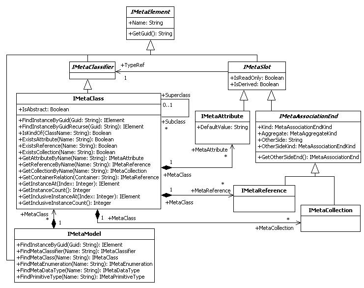
StarUML™ meta-model comprises the relatively small number of meta-model elements as shown in the diagram. IMetaElement is the top-level element of meta-model elements and has attributes of Name and GUID. Since modeling elements are instances of a meta-model element (specifically, IMetaClass), the Name attribute value of IMetaElement should be one of the modeling elements' names described in "Chapter 5. Modeling Element Management". Examples are "Model", "View", "UMLClass", and "UMLAttribute".
The top-level IMetaElement has meta-model elements like IMetaClassifier and IMetaSlot. IMetaClassifier is a meta-element for the definition of modeling elements themselves, and IMetaSlot is for the definition of modeling element attributes and reference attributes. Also, concrete elements like IMetaClass, IMetaAttribute, IMetaReference, IMetaCollection, and IMetaModel are derived from IMetaClassifier and IMetaSlot; they play the most important roles in the StarUML™ meta-model architecture.
IMetaModel element maintains and manages meta-model elements as a collection and provides use of other meta-model elements. Only one IMetaModel exists in one StarUML™ application. Reference to the object can be obtained through the IStarUMLApplication interface.
var app = new ActiveXObject("StarUML.StarUMLApplication");
var meta = app.MetaModel;
It has been mentioned that IMetaModel element provides use of other meta-model elements. The following example shows obtaining reference to IMetaClass meta-elements by using IMetaModel. It will be explained again in the IMetaClass element section that the number of references to IMetaClass types and the number of modeling elements are the same (check with the following example).
var app = new ActiveXObject("StarUML.StarUMLApplication");
var meta = app.MetaModel;
for (var i = 0; i < meta.GetMetaClassCount(); i++){
var metaClass = meta.GetMetaClassAt(i);
...
}
Although omitted in the class diagram above, there are IMetaEnumeration, IMetaDataType, and IMetaPrimitiveType meta-model elements in similar relationships with IMetaClass, and the IMetaModel interface provides reference to these elements. The IMetaEnumeration element is a meta-element for defining enumeration type related to modeling elements. UMLVisibilityKind and UMLAggregationKind are examples of IMetaEnumeration element instances. IMetaDataType is a meta-element for defining data type other than enumeration and primitive type. Points type is the only instance of this. And IMetaPrimitiveType element is a meta-element for defining primitive types, which are Integer, Real, Boolean, and String.
The IMetaModel interface provides a find method for meta-elements. The following example is a section of the first example in this chapter. It shows the obtaining of reference to IMetaClass elements for the UMLClass modeling element using the IMetaModel.FindMetaClass method (the number of references to IMetaClass types is same as the number of the modeling elements).
var app = new ActiveXObject("StarUML.StarUMLApplication");
var meta = app.MetaModel;
var metaClass = meta.FindMetaClass("UMLClass");
...
Like the IMetaClass, the IMetaModel interface provides a find method to other meta-elements like FindMetaClassifier, FindMetaEnumeration, FindMetaDataType, and FindPrimitiveType.
The IMetaModel interface is a GUID for modeling elements and provides the FindInstanceByGuid method that acquires reference to respective modeling elements. The FindInstanceByGuid method returns the IElement type reference. The following code can be used as an extension of the example above.
... var guid = ... var elem = meta.FindInstanceByGuid(guid); ...
The IMetaClass element is a meta-element that provides definition for each modeling element, and maintains and manages instances of each modeling element as a collection. In the StarUML™ application, the number of IMetaClass elements is the same as the number of modeling elements. The following code shows obtaining IMetaClass type reference for each modeling element using the IMetaModel.FindMetaClass method.
var app = new ActiveXObject("StarUML.StarUMLApplication");
var meta = app.MetaModel;
var metaClassOfPackage = meta.FindMetaClass("UMLPackage");
var metaClassOfClass = meta.FindMetaClass("UMLClass");
var metaClassOfAttribute = meta.FindMetaClass("UMLAttribute");
...
Another way to obtain reference to the IMetaClass type elements is to use the GetMetaClass method of the IElement interface, which is the top-level type of modeling element.
elem = ... // Get reference to modeling elements. var metaClass = elem.GetMetaClass();
The IMetaClass interface provides methods to obtain superclasses and subclasses in the inheritance structure of each modeling element. The superclass of the IElement type element—which is the top-level modeling element—is null.
var metaClass = ... // Get IMetaClass type reference.
var superCls = metaClass.Superclass;
...
for (var i = 0; i < metaClass.GetSubclassCount(); i++){
var subCls = metaClass.GetSubclassAt(i);
...
}
The IMetaClass interface is a GUID for modeling elements and provides the FindInstanceByGuid method, which is similar to IMetaModel.FindInstanceByGuid, to obtain reference to respective modeling elements. IMetaClass's method is more efficient than IMetaModel's method since it searches for modeling elements of specific types only. If no matching result is found in the respective type, FindInstanceByGuidRecurse can be used to search all derivative modeling elements as well.
The first example in this section illustrated searching for instances of a specific modeling element using the GetInstanceCount and GetInstanceAt methods of the IMetaClass interface. Instances of modeling elements refer to user-created elements.
var metaClass = ... // Get IMetaClass type reference.
for (var i = 0; i < metaClass.GetInstanceCount(); i++){
var AElem = metaClass.GetInstanceAt(i);
...
}
The IMetaAttribute interface can be used to read the specifications for attributes of each modeling element. Reference to IMetaAttribute can be obtained through the IMetaClass interface as shown below. The IMetaClass interface also provides the ExistsAttribute method that checks for the existence of an attribute with a specific name, and the GetAttributeByName method that returns IMetaAttribute type elements of a specific name.
var app = new ActiveXObject("StarUML.StarUMLApplication");
var metaClass = app.MetaModel.FindMetaClass("UMLClass");
for (var i = 0; i < metaClass.GetMetaAttributeCount(); i++){
var metaAttr = metaClass.GetMetaAttributeAt(i);
...
}
The following example shows reading the specifications for attributes of modeling elements.
var metaAttr = ... // Get IMetaAttribute type reference. var metaType = metaAttr.TypeRef; var attrName = metaAttr.Name; var attrType = metaType.Name; ...
Also, IMetaSlot, the upper-level interface for IMetaAttribute, provides the IsReadOnly and IsDerived properties. IsReadOnly indicates whether the respective attribute is read-only, and IsDerived indicates whether the respective attribute actually does not exist but is resembled by other attributes.
The IMetaReference and IMetaCollection elements define the reference attributes that specify references between different modeling elements. These references all express associations. While IMetaReference shows references with multiplicity of '1' or less, IMetaCollection shows references that have to be expressed as collections. This is the only difference between the IMetaReference and IMetaCollection interfaces (IMetaReference and IMetaCollection are both derived from the IMetaAssociationEnd interface).
First, let us look at an example of obtaining reference to IMetaReference and IMetaCollection objects. Just like IMetaAttribute, the IMetaClass interface can be used.
var metaClass = ... // Get IMetaClass type reference for a specific modeling element.
// Get references to IMetaReference type objects.
for (var i = 0; i < metaClass.GetMetaReferenceCount(); i++){
var metaAttr = metaClass.GetMetaReferenceAt(i);
...
}
// Get references to IMetaCollection type objects.
for (var i = 0; i < metaClass.GetMetaCollectionCount(); i++){
var metaAttr = metaClass.GetMetaCollectionAt(i);
...
}
The IMetaAssociationEnd interface, the shared upper-level type for IMetaReference and IMetaCollection, provides properties and methods for defining specifications of reference attributes (associations) for the respective modeling element.
The Kind property simply determines whether the respective association is a simple reference type or a collection reference type. The IMetaReference type is a simple reference type and the IMetaCollection type is a collection reference type. The Aggregate property shows the AggregationKind attribute of the respective association. This value is an enumerative type and can be one of the following values:
The OtherSide property shows the name of the AssociationEnd on the other side of the association, and the OtherSideKind property shows whether the AssociationEnd on the other side is a simple reference type or a collection reference type.
The GetOtherSideEnd method returns the IMetaAssociationEnd type reference at the AssociationEnd on the other side of the association. The following example shows how to use the properties and methods provided by the IMetaAssociationEnd interface that is the shared upper-level type of IMetaReference and IMetaCollection.
var metaSlot = ... // Get IMetaReference or IMetaCollection type reference. var kind = metaSlot.Kind; var aggregate = metaSlot.Aggregate; var otherSide = metaSlot.OtherSide; var otherSideKind = metaSlot.OtherSideKind; var otherSideEnd = metaSlot.GetOtherSideEnd(); ...
The TypeRef reference attribute of the IMetaSlot interface can be used to find out the IMetaClass element for an IMetaReference or IMetaCollection type object. The following example shows how to read the element on the opposite side of the association for a modeling element.
var metaSlot = ... // Get IMetaReference or IMetaCollection type reference. var otherSideEnd = metaSlot.GetOtherSideEnd(); var otherSideMetaClass = otherSideEnd.TypeRef; ...